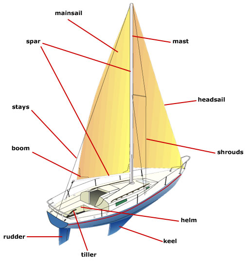
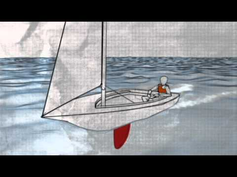

SailingForDummies.com
Sailing
Parts of a Sailboat
- Block-The nautical term for a pulley.
- Boom-A horizontal pole that attaches to the mast and is used to extend the foot of the mainsail.
- Bow-The forward part of a boat.
- Centerboard-A pivoting plate used to balance a boat and lessen leeway.
- Cleat-A fastening around or in which lines can be secured.
- Hull-The primary structural body of a vessel, not including superstructure, masts or rigging.
- Mast-A pole placed vertically on a boat used to support sails.
- Etc.

